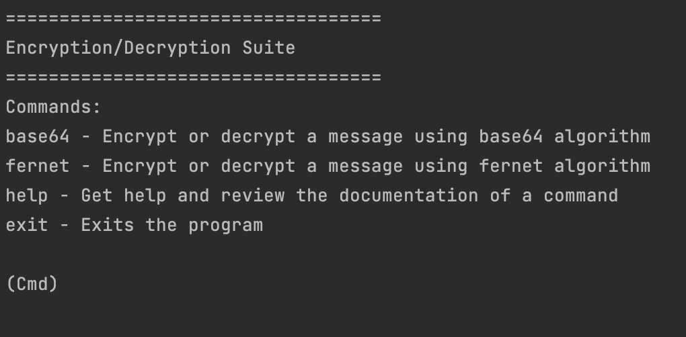

Artefacts
The artefacts I have created during the Module 3 (Secure Software Development) of MSc Computer Science program.
A blog post on how people can be managed to overcome cybersecurity attacks from the inside (Unit 2):
Overview:
Instructions: Some say that people are the biggest risk of cyber security. Select five terms from ISO/IEC Standard 27000 Section 3 Terms and Definitions and write a 300-word blog post on how people can be managed to overcome cyber security attacks from the inside.
Selected terms: risk assessment, threat, vulnerability, authentication, policy, organization.
People will be people when it comes to cyber security
There is a certain fact that we cannot deny: the information systems are only as robust as the people who are using them. A secure system by design can easily be a target to serious security threats when the users, whether intentionally or not, misuse it. How secure a system can be when an inattentive employee gets around the password policy by setting a password by combining the current month (May - uppercase and lowercase letters), current year (2022 - numbers) and a full stop (special character)? Well, we have even worse news: this password is far more complex when compared to the most common passwords (Nordpass, 2021).
Proper authentication and authorization are the rule of thumb - only selected few should have the necessary privileges to manipulate the sensitive data. This simple measure will make insider attacks more unlikely and, at the same time, lessen the problems occurring due to the careless or clumsy employees.
While depending on the nature of the business, giving read-only access to new recruits until they reach a certain milestone (that could be in terms of time or achievements) might be a good idea. A standard procedure for new recruits would be to oblige them to submit the information they would append to the database to their supervisors. Only those who prove their competence may be gradually given other permissions.
In order to add a little bit of enticement to the mixture, a reward scheme might be introduced: those who detect, and report vulnerabilities would be rewarded handsomely. This will not only drive people to find and report the open doors they would otherwise turn a blind eye on, but also promote a security-oriented organization culture in which no room is left for turncloaks to operate.
To summarize in one sentence: in today’s highly competitive and volatile world, people should be in the center of the risk assessment of any organization.
References:
ISO (2018) ISO/IEC 27000:2018(en) Information technology — Security techniques — Information security management systems — Overview and vocabulary. Available from: https://www.iso.org/obp/ui/#iso:std:iso-iec:27000:ed-5:v1:en [Accessed 30 September 2022].
Nordpass (2021) Top 200 Most Common Password List 2021. Available from: https://nordpass.com/most-common-passwords-list/ [Accessed 27 September 2022].
Sharma, A. & Bana, R. K. (2022) Identification and integration of security activities for secure agile development. International Journal of Information Technology 14(2): 1117-1130.
A postcode checker using regex (Unit 4):
Overview:
Instructions: The UK postcode system consists of a string that contains a number of characters and numbers – a typical example is ST7 9HV (this is not valid – see below for why). The rules for the pattern are available from ideal postcodes (2020). Create a python program that implements a regex that complies with the rules provided – test it against the examples provided.
Using the key patterns of UK post codes, I detected some patterns, for instance: There are 8, 7 and 6-character post codes and each of these postcodes follow a similar patterns with minor differences. I came up with a regex for each pattern and compared each case with the given passcode.
Check out the source code from here.
Writing a unit test for postcode checker (Unit 5):
Overview:
Since we were introduced to the concept of unit tests and the Python's built-in unittest module, I wrote a unit test for the password checker that I developed one week ago.
In order to make it work with unit testing framework, I made a few changes in the postcode checker program. In order to test the functionality, I redesigned the checker as a class and wrote 4 test cases.
You can see the revised postcode checker and the unit test file with test cases from here.
Assignment 1: Team Project Design Document (Unit 6)
Overview:
At the beginning of the module, we agreed on developing a vulnerability reporting tool for the National Centre for Cyber Security (NCSC) in the Netherlands.
As a result of the team effort, we came up with a project design document which includes a brief introduction of the system that we will develop along with four UML diagrams.
You can check out the project design document from here.
Exploring a simple Python shell (Unit 7):
Overview:
Instructions: Review the blogs at Prakash (2018) and Szabo (2018) and then create a CLI/ shell that implements the following:
- When you enter the command LIST it lists the contents of the current directory
- The ADD command will add the following two numbers together and provide the result
- The HELP command provides a list of commands available
- The EXIT command exits the shell
Using cmd module, I created a simple CLI with the required functionality. You can see it here.
Cryptography programming exercise (Unit 8):
Overview:
Instructions: Read the Cryptography with Python blog at tutorialspoint.com . Select one of the methods described/examples given and create a python program that can take a short piece of text and encrypt it.
I have reviewed the page and for the beginning, I chose base64 algorithm and wrote a simple program to encrypt/decrypt a text given by user. Later on, I applied it on a CLI which is similar to the previous exercise. Using this program, a user can use the command line interface to enter a text to encrypt a text and later on, decrypt the encrypted text. You can see my program from here.
As the second step, I chose a stronger encryption algorithm and added fernet as an additional encryption/decryption tool to the CLI. For this, I had to design a multi-level CLI. Here, you can see my two-level CLI with fernet and base64 encryption/decryption algorithms.

Assignment 2: Team Project Coding Output (Unit 11):
Overview:
As we pointed out in the project design document in Week 6, we designed the NCCTS (National Cyber Threat Tracking System) using Django web framework.
We designed the system as a collection of microservices. I personally designed the "report" app which included reporting a vulnerability, viewing fixed vulnerabilities and the handling of user deletion request.
You can see the website live at https://www.nctts-essex.com.
Check out the source code from here.
Assignment 3: Reflective Piece (Unit 12)
Overview:
Instructions: Write a 1000-word reflective piece which includes components of the reflections that you have captured throughout the module.
Just like I did in the previous module, I used Rolfe et al.’s (2001) reflective writing format again to reflect on my progress and my feelings throughout the module.
You can read my module-end reflections from top of the reflections page.
References:
Ideal Postcodes (2021) The UK Postcode Format. Available from: https://ideal-postcodes.co.uk/guides/uk-postcode-format [Accessed 14 October 2022]
Prakash, D. (2018) Write a shell in Python. 27 September 2018. Danish Prakash. Available from: https://danishpraka.sh/2018/09/27/shell-in-python.html [Accessed 06 November 2022].
Szabo, G (2018) Create your own interactive shell with cmd in Python. 15 February 2018. Code Maven. Available from: https://code-maven.com/interactive-shell-with-cmd-in-python [Accessed 06 November 2022].